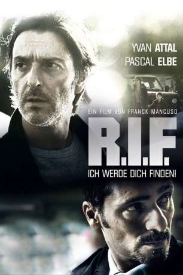
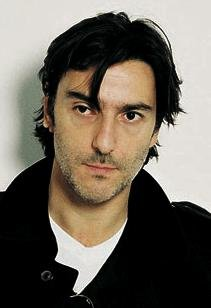
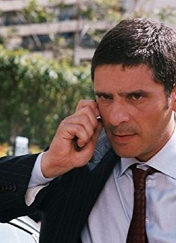
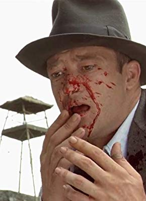

#8120 R.I.F. - Ich werde Dich finden
 
 IMDB-Wertung: 5.9 / 10
IMDB-Wertung: 5.9 / 10  Metascore: 0
Metascore: 0 
Der Pariser Polizei-Kommisar Stéphane Monnereau (Yvan Attal) will endlich entspannen und seine Seele baumeln lassen. Als er sich mit seiner Frau und seinem kleinen Sohn gerade auf dem Weg in den Urlaub befindet, hat sein Wagen plötzlich eine Motorpanne. Um die Reperatur seines Wagens zu organisieren, macht er sich auf den Weg zur nächsten Tankstelle und lässt seine Frau samt Auto und Kind zurück. Als er wieder zurückkommt, ist seine Frau spurlos verschwunden. Die Polizei nimmt die Ermittlungen auf und schon bald gerät Stéphane selber in das Visier der Ermittler.Völlig verzweifelt nimmt er die Sache selbst in die Hand und taucht zusammen mit seinem Sohn unter. Auf der Suche nach seiner verschwundenen Frau gerät er schon bald in Lebensgefahr.
Jahr: 2011
Dauer: 86 Minuten
FSK: 16
Land: Frankreich Studio: ZDFTonspuren:
Untertitel:
Auflösung: 1080p (1920x816) Größe: 11366 MB
Genre: Thriller, Krimi
Regisseur: Franck Mancuso
Drehbuch: Franck Mancuso
Soundtrack: Louis Bertignac
Darsteller:
-  Yvan Attal als Stéphane Monnereau
-  Pascal Elbé als Capitaine Bertrand Barthélémy
- Valentina Cervi als Valérie Monnereau
- Armelle Deutsch als Chef Marion Marquand
- Anne Charrier als Sandra Giuliani
- Jean-Charles Rousseau als CRS 2
- Eric Ruf als Jean-Dominique Perrin
- Pascal Elso als Christian Baumann
-  Carlo Brandt als Richard Jorelle
- Agnès Blanchot als Charlène Riback
- Mado Maurin als La mère de Jorelle
- Aladin Reibel als Menghetti
- Bruno Magne als Albert Koskas
- Jean-Pierre Rochette als Thomas Francourt
- Talid Ariss als Théo Monnereau
- Marie-Bénédicte Roy als La gérante station service
- Bernard Rosselli als Le dépanneur
- Jean-Noël Cnokaert als Gendarme Germain
- Mickaël Chirinian als Gendarme Scholtes
- Marilyne Fontaine als Réceptionniste hôtel
- Jean-Gilles Barbier als Gendarme Terrail
- Benjamin Baroche als Dr. Romain Galtier
- Thierry Perkins-Lyautey als Gendarme Monestier
- Dominique Delaroche als CRS 1
- David Koubi als Gardien de la paix PAF
- Marco Panzani als L'ouvrier gendarmerie
- Laetitia Mas als La 'poule' de Galtier
- Virginie Arnaud als Doublure Valentina Cervi
- Carlos Bonelli als Doublure Carlo Brandt
- Michel Bouis als Doublure Aladin Reibel
- Franck Merenda als Doublure Bruno Magne
- Eric Mondoloni als Doublure Yvan Attal
- Patrick Gimenez als Technicien IRCGN (uncredited)
Datei: X:\2011(N-Z)\R.I.F. - Ich werde Dich finden (2011, FSK16, 1920x816).mkv seit 28.01.2018
Festplatte: HD 2011(G-Z)
 Es gibt insgesamt 132 Filme in der Gruppe '2011(N-Z)'
Es gibt insgesamt 132 Filme in der Gruppe '2011(N-Z)'